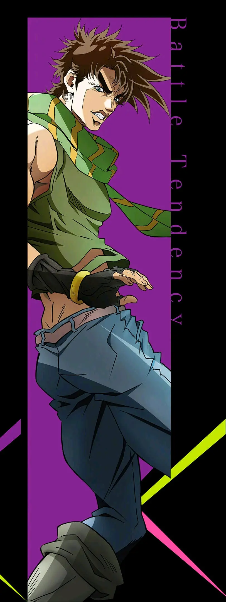
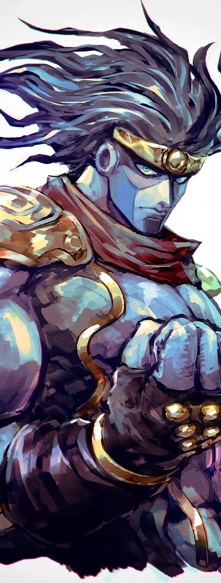
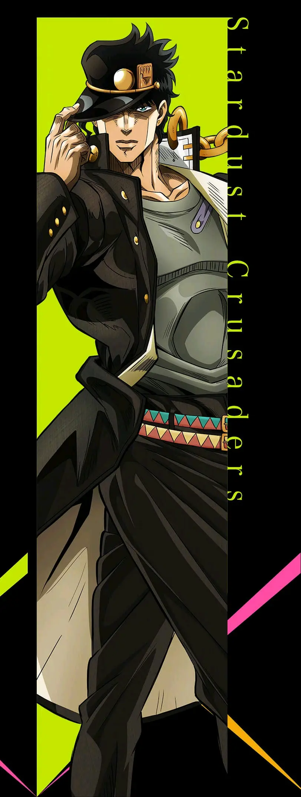
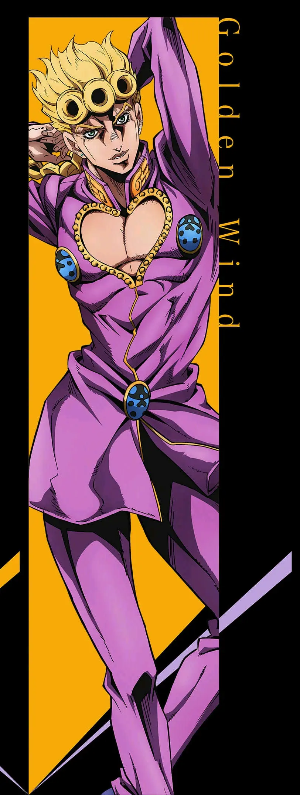

家族历史悠久的英国贵族乔斯达家的嫡男，初代JOJO。 拥有作为贵族的骄傲，率直而绅士的性格。与迪奥相遇的时候抱有不擅长应对对方的意识， 之后把他作为自己的竞争对手共同成长。拥有波纹气功能力。他与迪奥·布兰度展开了一场 生死对决，最后在新婚之夜同归于尽。
注意：鼠标移至图片查看人物，移至文字查看替身
人物介绍
乔纳森·乔斯达
（Jonasen Joestar）
能力：波纹气功
乔纳森·乔斯达的孙子,他的个性与英国绅士气息浓厚的祖父全然不同。有些轻浮、冲动， 遇事首先考虑如何用尽量少力的方法解决，而且还非常的“正经”。他有着与乔纳森同样充满了火热正 义感的灵魂，加上与生俱来的波纹力量，令他注定了不会作为一个普通人终此一生。而这一点，正是 祖母艾莉娜·班鲁多最担心的(因此不想让乔瑟夫接触波纹)。

乔瑟夫·乔斯达
（Joseph Joestar）
乔纳森·乔斯达的孙子,他的个性与英国绅士气息浓厚的祖父全然不同。有些轻浮、冲动， 遇事首先考虑如何用尽量少力的方法解决，而且还非常的“正经”。他有着与乔纳森同样充满了火热正 义感的灵魂，加上与生俱来的波纹力量，令他注定了不会作为一个普通人终此一生。而这一点，正是 祖母艾莉娜·班鲁多最担心的(因此不想让乔瑟夫接触波纹)。
替身：隐者之紫
（Hermit Purple）
替身隐者之紫（Hermit Purple）外观类似荆棘，透过相机、电视等物品进行“念照”拍 摄，有透视远方的能力，可用于沙子上将其变成地图，能用来操控电器。虽然替身六维很弱，但配以乔瑟夫的头脑和波纹气 功也能成为强大的武器，从和DIO之战中能看出紫色隐者能作为波纹导体进行攻击。名字对应塔罗牌大阿卡娜牌中的九号牌 “隐者（The Hermit）”。


空条承太郎
（Jotaro Kujo）
乔瑟夫·乔斯达的外孙，少年时承太郎性格叛逆，从不刻意表 现自己的情感，经常被误认成一个无情和冷漠的人。但承太郎有着自己的原则，他内心善良、痛恨 邪恶，在周遭的人陷入危机时会出手相救，喜欢传统的日本女性，最讨厌吵闹的女人。
替身：白金之星
（Star Platinum）
替身由穆罕默德·阿布德尔按照塔罗牌的暗示命名为白金之星
（Star Platinum），名字出自塔罗牌大阿卡娜牌中的的十七号牌“星星（The Star）”。
速度、精密度和破坏力都是史上最强（速度可以超越光速，力量可以打碎钻石，精准度可以在零距离
抓住手枪子弹，甚至可以通过此点用素描完美地描绘出苍蝇,当作望远镜以及显微镜使用）。
人型替身，近距离力量型，具有超高精度动作，与一般替身相
比有着压倒性的攻击力和速度。到第三部与DIO决战中觉醒“时间暂停”的能力从而能够在静止的时间中行动。
东方仗助
（Joske Hikashikata）
乔瑟夫·乔斯达的私生子，空条承太郎的舅舅、空条徐伦的舅姥爷， 外形十分时尚，改装校服、喜欢名牌鞋子 ，喜欢打电子游戏，很受女孩子欢迎，有世界上最温柔的力量， 十分重视自己的家人、朋友，平时基本上都是温和善良的样子，但是一旦涉及自己的家人、朋友或是自己 的发型就会暴走。
替身：疯狂钻石
（Crazy Diamond）
将损坏物体或生物恢复到原来的状况,透过这份修复的能
力，仗助能够修复被毁坏的物品和治疗他人身上的伤口，但是该替身无法治疗自己。也可选择透过用替身的
拳头破坏对方后再发动能力，以此改变物体形状或将两种物体融合在一起。若是对被毁坏的物品的其中一部
分碎片使用能力，碎片会“急速向原物飞去”；若是固定碎片则可以“将原物体拉向碎片”。碎片离开本体的时间
过长则无法使用该能力。修复速度相当快，能做到在一瞬间用替身的物理攻击贯穿人体后又在一瞬间修复完整
，速度快到被修复的对象连疼痛都来不及察觉。
承太郎评价说这是世界上最温柔的力量。

乔鲁诺·乔巴纳
（Joruno Jovanna）
乔纳森·乔斯达肉体的DIO与某日本女人所生下的儿子，同时拥有DIO 和JOJO家族的血统，童年缺爱，对万事冷淡和漠不关心，从救了一名黑道男子后，变得自信和关心他人。 他能够毫不犹豫地做出各种重要决定，拥有着强烈的正义感。
替身：黄金体验
（Gold Experience）
通过用拳头殴打或碰触任何没有生命的物体，赋予物体生命，被赋予
生命的物件将会变成有机物体，物体种类能由乔鲁诺自行决定。物体崩坏则会变回原物体。如果对赋予生
命所形成的有机体进行攻击的话，力道会被反弹。如果对象物体曾经属于一个整体的一部分（可以是破碎物
体的碎片，也可以是隶属于某一整体的单一物体，比如衣服），变成的动物会主动寻找并尝试回归原来属于
的整体。
能够对自己进行治疗。由于仅仅只是修复身体受损部位，因此无法复活
死者，也无法治疗疾病和中毒。碰触物体发动能力时有能精准侦察生命的能力衍生用法。
空条徐伦
（Jolinne Kujo）
空条承太郎的女儿，历代主角团中出现的第一位女性JOJO，不喜欢被别人 叫做JOJO，只有她的母亲才有资格用这个称呼叫她，有着和父亲相似的口头禅，性格外向，善于交际，聪敏， 反应敏捷，善分析，像圣母玛利亚一样有着博爱精神，具有强烈的包容性，初期很叛逆、轻浮，成熟后珍视家 人和朋友。
替身：石之自由
（Stone Free）
能将自己的身体变成线，并能自由操纵由于线的组成物就是自己的肉体，
线的延伸长度受限于自身的质量，而线一旦折断自己就会受伤，但(至少在后期)线的恢复能力非常强。
在最终战中，利用「抽线会让身体组织减少」以及「将本体化成柔软的线」
的莫比乌斯环原理，可以借此回避一些对本体的直接攻击。可用作探测、传声、束缚目标、缝合伤口、编织成
防弹衣挡住攻击、编成网状并在网上行走、甚至能聚合成钢钻或手铐等硬物，
人型化后为近距离力量型替身连续殴打时，会和父亲的替身「白金之星」
同样发出「欧拉欧拉欧拉」的声音。

JOJO的奇妙冒险
本站只提供WEB页面服务，本站不存储、不制作任何视频，不承担任何由于内容的合法性及健康性所引起的争议和法律责任。
若本站收录内容侵犯了您的权益，请附说明联系邮箱，本站将第一时间处理。
E-Mail：1477500701@qq.com